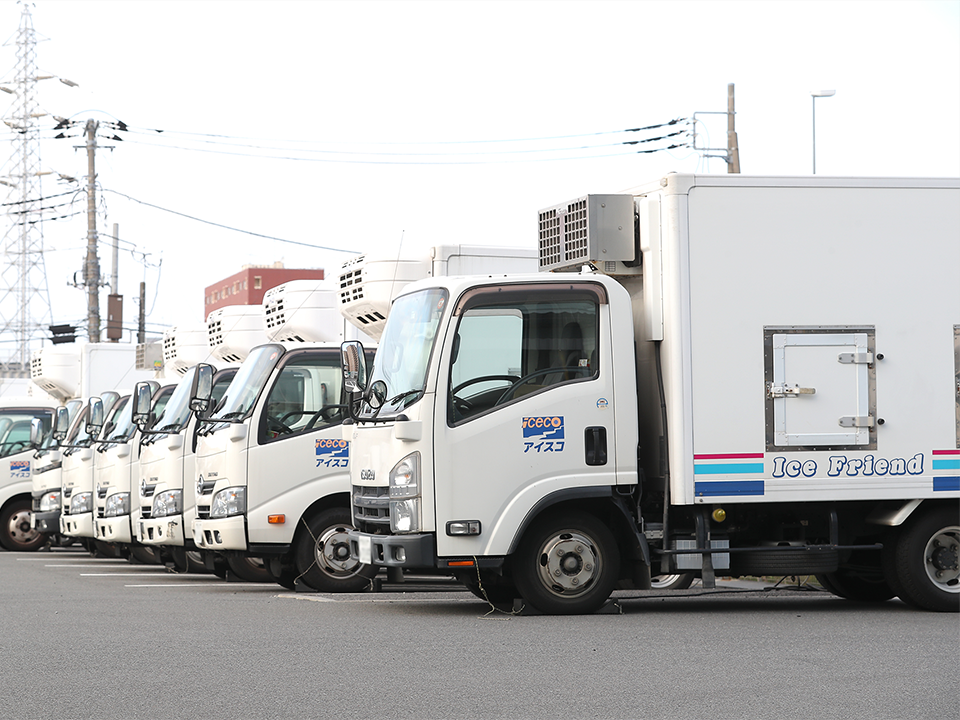
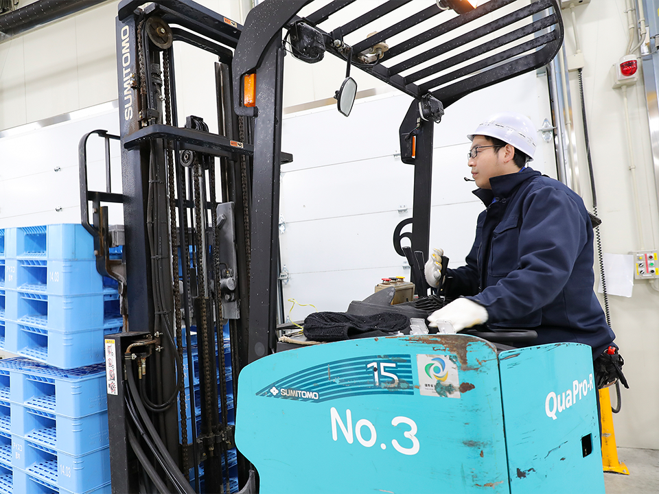
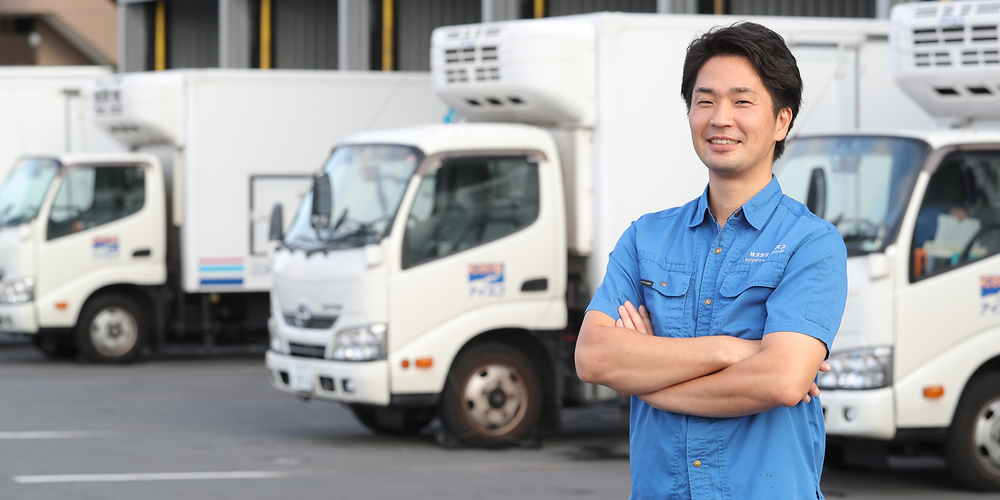
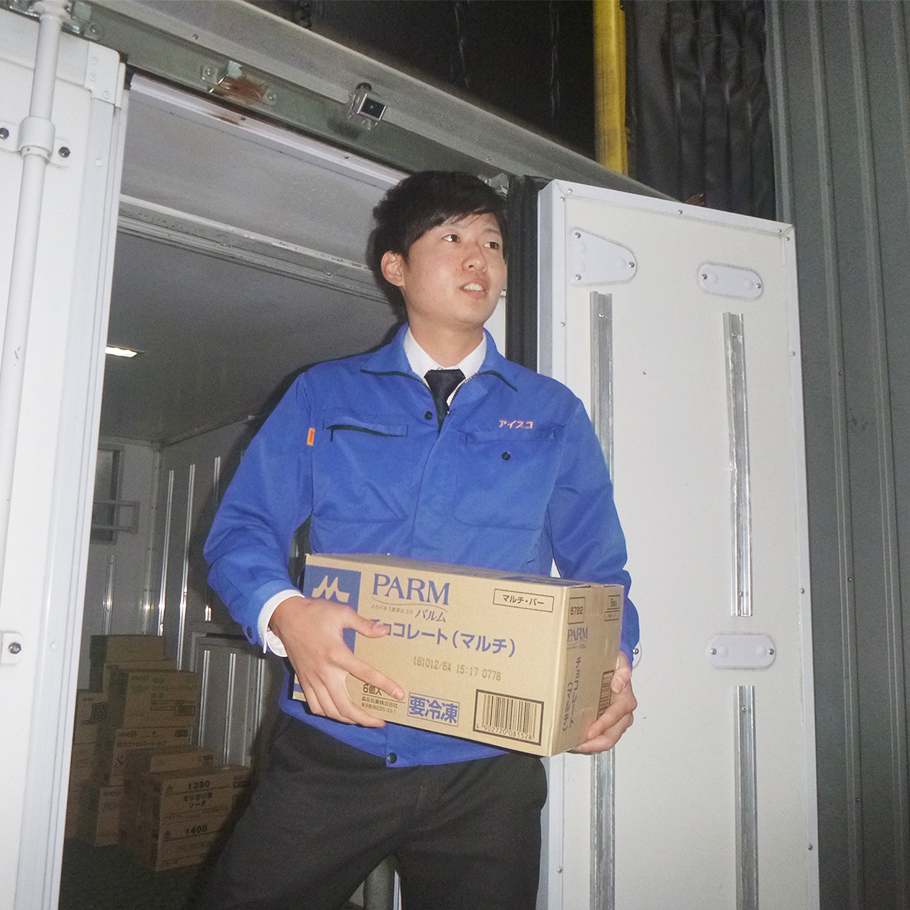
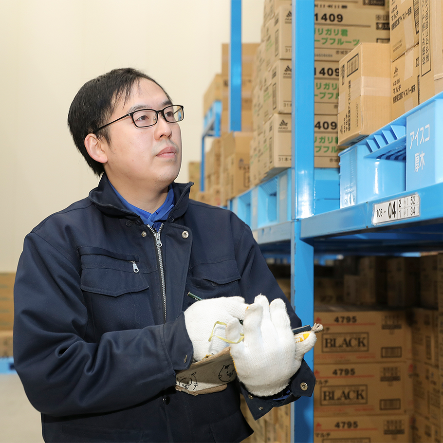
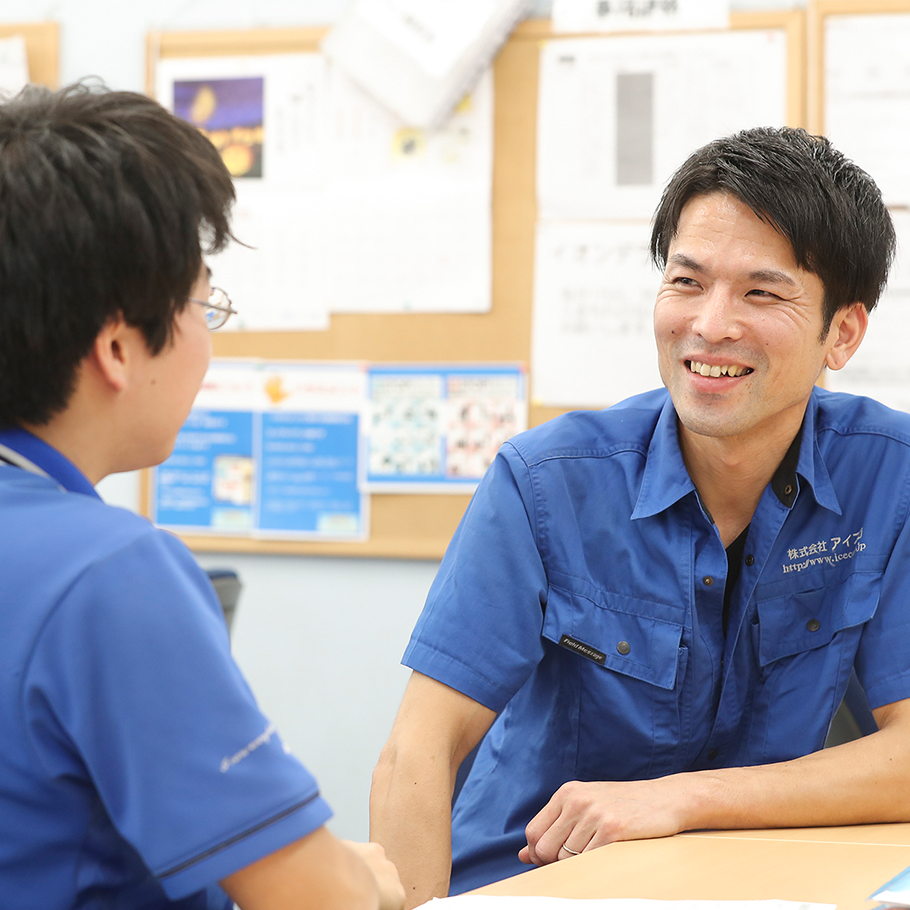
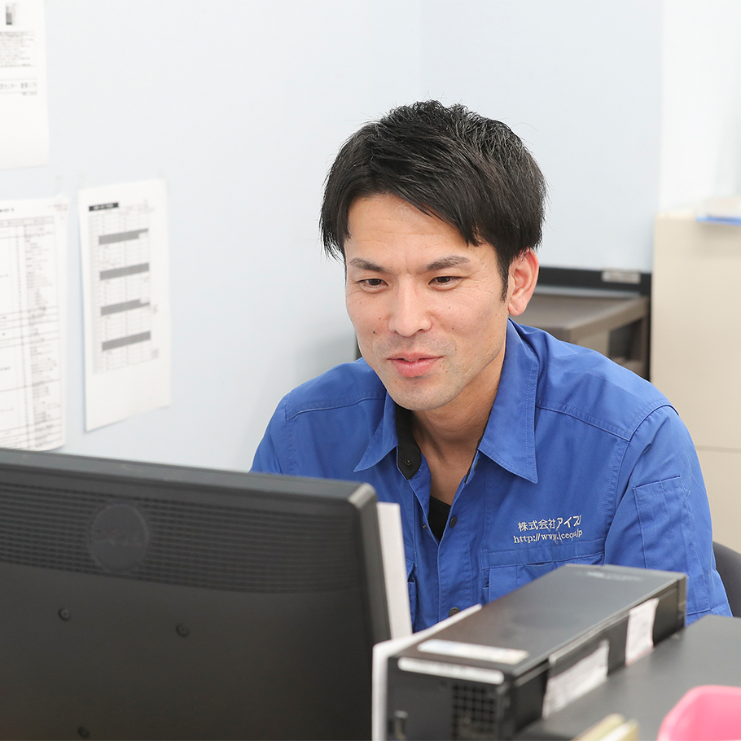

1. ルートセールス
2tトラックでアイスクリーム・冷凍食品をお届けする仕事です。
当社の一番の強みである「売場づくり」を通して、店舗様・消費者様に喜んでもらえるアイス・冷凍食品売場を提供していきます。
社内で最も人数の多い職種であり、「会社の顔」としてお客様からの信頼をいただくとても重要な仕事をしています！
フローズン事業部は、アイスクリーム及び冷凍食品の卸売業を行っている事業部です。
現在、東京・神奈川・千葉・埼玉・静岡・愛知の1都5県に10の事業所を展開しており、関東、東海エリアのお得意先店舗に商品をお届けしています。新規のお得意先も年々増加しており、今後もさらに多くの方に食品を通して笑顔をお届けしていきます！
2tトラックでアイスクリーム・冷凍食品をお届けする仕事です。
当社の一番の強みである「売場づくり」を通して、店舗様・消費者様に喜んでもらえるアイス・冷凍食品売場を提供していきます。
社内で最も人数の多い職種であり、「会社の顔」としてお客様からの信頼をいただくとても重要な仕事をしています！

各営業所の冷凍倉庫内で、アイスクリーム・冷凍食品の入出庫やピッキング作業、発注業務などを行っていただきます。ルートセールスが良い売場を作るためには、倉庫の在庫がしっかりと管理され、必要な商品をいつでも持ち出せる状態になっていることが大前提です。適正な在庫管理を通して、ルートセールスの売場づくりを支えています！


1年目に比べて1日に配送する店舗数が増えましたが、それだけ仕事が早くなったと認めてもらえたことが嬉しいですね。
今では1年目で積んだ経験を活かして常に先を見て動けるようになり、作業効率が向上したことが1番の成長だと感じています。
例えばトラックへの積み込みでも順番や積荷の形を考え、より効率良く作業ができるように自分なりにアレンジしています。
2年目になると後輩も入ってきて、店舗を回る際に後輩を同乗させることもあります。
同乗時には、今まで先輩に教えてもらったことを受け売りではなく自分なりに考えながら教えるようにしています。
後輩ができたことで責任感も強くなりましたね。
後輩に見られていると思うと、運転するときも安全確認により細心の注意を払い、お客様への対応もより丁寧になりました。

冷凍倉庫の中で作業をしていると、フォークリフトに霜が付いてしまうことがあります。
以前、その霜が原因で商品が滑って落下し、破損させてしまいました。
前職でフォークリフトの扱いは慣れているつもりでしたが、タイプの違うリーチフォークリフトの扱いにまだ不慣れで、私の運転技術が未熟だったことも原因でした。
それ以来、振動や遠心力に気を配り、運転に気を付けるようになりました。
誰かが起こしたミスは誰にでも起こりうることなので、同じミスを繰り返さないように倉庫メンバーで共有し、事前にミスを防ぐように努めています。
初めて扱う仕事は、誰でも分からないことだらけで困惑するものです。
私はまず自分自身が経験し、内容を把握し理解を深めたうえで、後輩に落とし込むようにしています。
やり辛いところは簡易化し、誰にでも作業が出来るような環境を整えていきたいと思っています。
そして、倉庫部門では安定した商品供給と、会社の資産である倉庫在庫の適正化を念頭に取り組んでいます。
お客様が求める商品をいつでも届けられるように安定した供給を保ちつつ、過剰な在庫を持たないように見極めることは難しいですが、見込み通りにうまくいったときは嬉しいですね。

各店舗の棚割り報告や商品導入指示、特売情報などを各ルートセールスへ落とし込み、管理・指導をおこなっています。
アイスコではルートセールスが休みのときには、代わりに代配送者が巡回します。その際、ルートセールスが日頃からきちんと商品を導入しているか、売場は見やすいように保たれているか、賞味期限が先の商品がローテーションされているかなど、細かい部分までチェックして、その報告を受けます。
できていない場合には代配送者からルートセールスへ注意をしていますが、ときには私から指導することもあります。
基本的には現在は内勤業務です。しかし、商品の積み忘れやケースの調子が悪いなど、イレギュラーなことが起こると配送に出るときもあります。
社内環境はとても良いと思います。
労働時間や作業手順が改善されて、帰宅時間も早くなりました。
それに伴いプライベートの時間を充実できるようになったので、趣味を楽しんだり、ときには社員同士で遊びに行くこともあります。
ボーリングやフットサルなどリクリエーションをおこなうときもありますね。
男性が多い職場ですが和気あいあいとしていて、他愛のない会話で盛り上がっています。
仕事面においても、倉庫も広く設備が整っていて非常に作業がしやすい環境ですね。

ルートセールス一人ひとりが各エリアを管理しているので、急な要望にも迅速に対応でき、お客様からも喜ばれています。
売場を任されている店舗もあり、自分で売場をコーディネートすることができます。売場づくりは工夫次第で売上にダイレクトに反映されるので、それが評価にも繋がりモチベーションもアップします。
仕事の分担ができているので、日々しっかり自分の仕事をしていれば、残業が多くなることはありません。
生活リズムに合わせ始業時間を決められるので、早く出社すれば早く帰ることができます。早い人は14時くらいに帰っていますね。
時間のメリハリをつけながら仕事に取り組み、自分の作りあげた売場で人々に喜んでもらえる。それが一番の魅力だと感じています。
